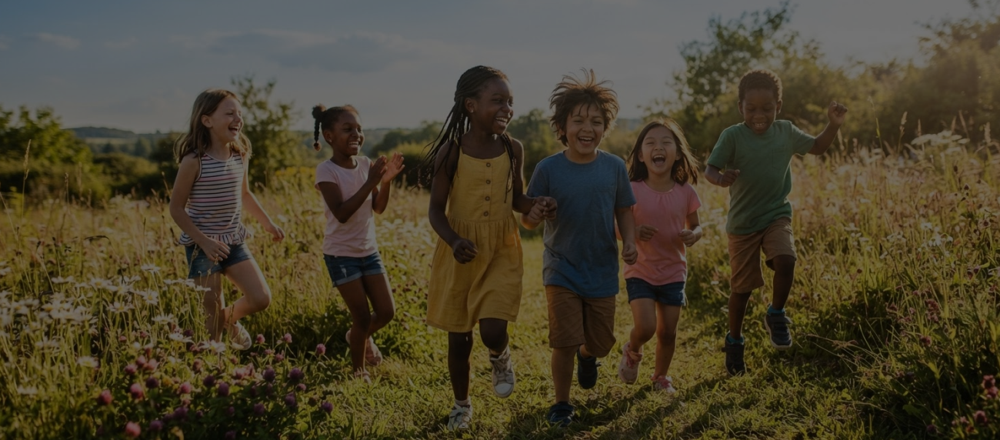
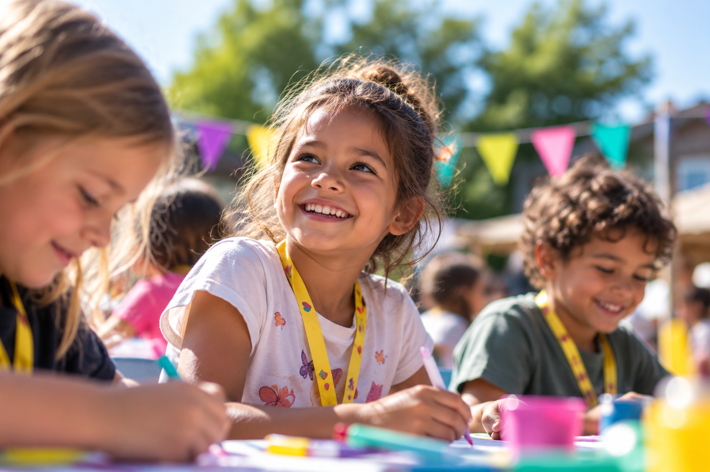
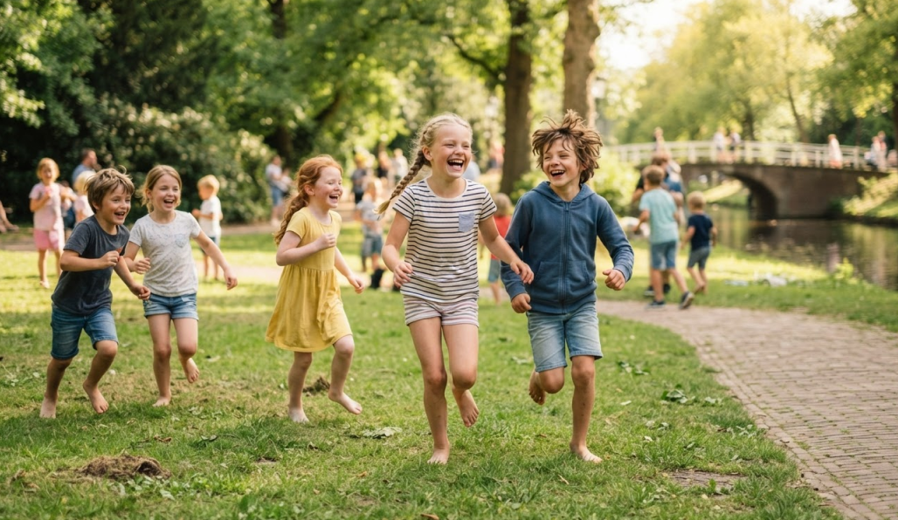
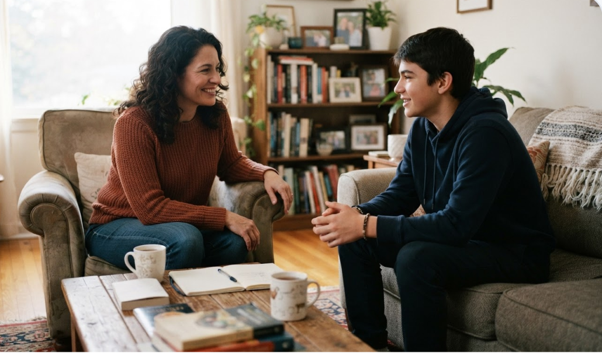
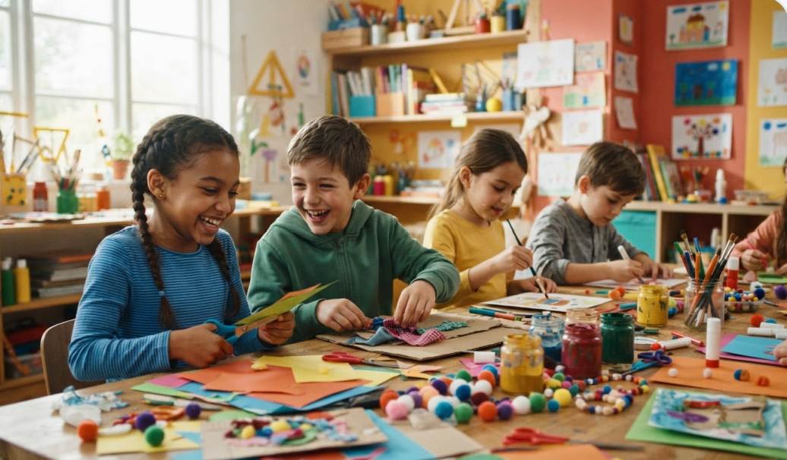
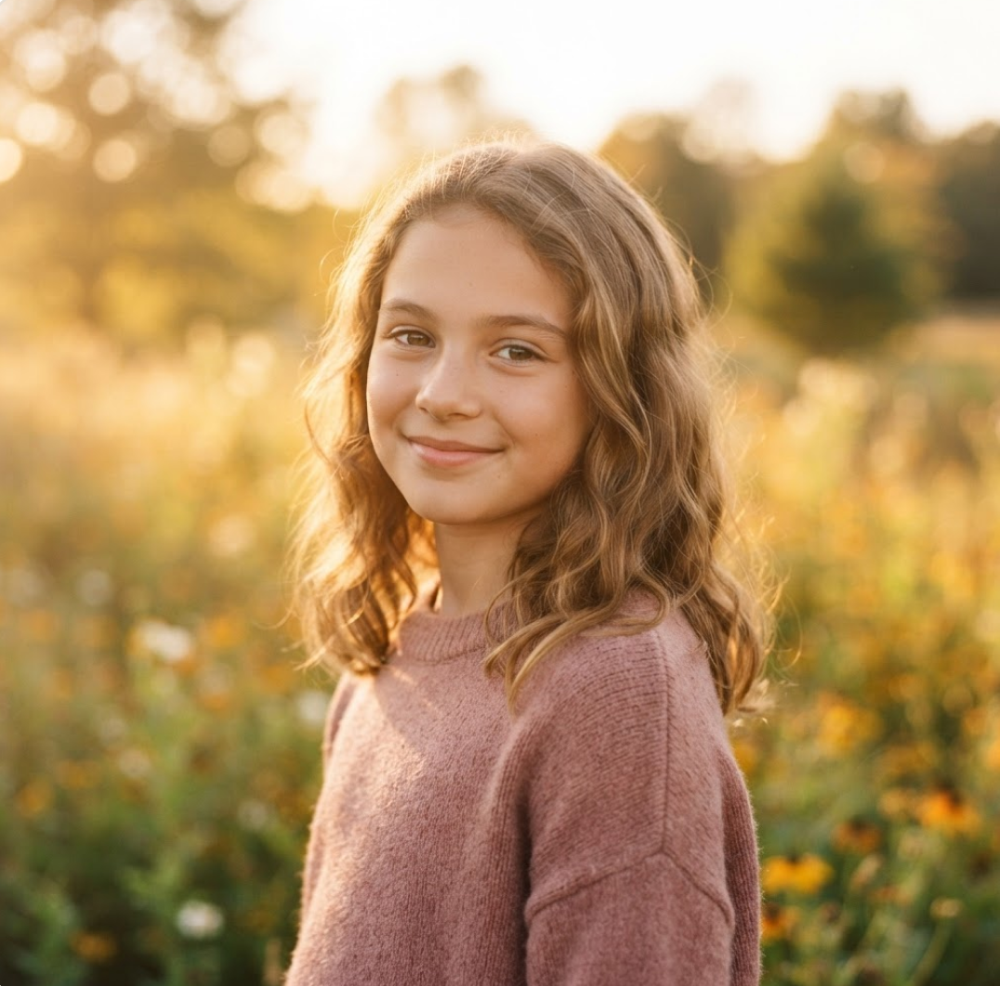

Geen kind alleen
Niet ieder kind groeit op in een veilige en stabiele omgeving. Samen zorgen we ervoor dat kinderen zich gezien en gehoord voelen.


ONZE MISSIE
Een stabiele, liefdevolle basis is helaas niet voor elk kind vanzelfsprekend. Als thuis een onveilige plek is door ernstige problemen, raken kinderen getraumatiseerd. Ze voelen zich eenzaam en trekken zich terug uit de maatschappij. Het Vergeten Kind strijdt onvermoeibaar voor deze kinderen. Wij halen ze uit hun isolement, bieden ze een adempauze door middel van kampen en activiteiten, en bieden langdurige, betrouwbare begeleiding. Samen bouwen we aan een toekomst waarin ze weer onbezorgd kind kunnen zijn.
Word donateurONZE IMPACT IN CIJFERS
Kinderen geholpen
Kinderen per jaar
Activiteiten per jaar
Ervaring
WAT WE DOEN
We ondersteunen kinderen en jongeren die opgroeien in een onveilige of instabiele thuissituatie. Met onze programma's en activiteiten bieden we aandacht, ontspanning en positieve ervaringen. Zo zorgen we ervoor dat kinderen zich gezien, gehoord en gesteund voelen.

Tijdens de Heppie Vakanties & Weekenden kunnen kinderen even ontsnappen aan de zorgen van thuis. Ze beleven leuke activiteiten, maken nieuwe vrienden en krijgen persoonlijke aandacht in een veilige en fijne omgeving.
Lees meer →
Met de Heppie Tour brengen we leuke en bijzondere activiteiten naar kinderen toe. Zo krijgen ook kinderen die niet mee kunnen op vakantie de kans om een fijne en bijzondere dag te beleven. Samen spelen, lachen en nieuwe dingen ontdekken zorgt ervoor dat ze hun zorgen even kunnen vergeten en mooie herinneringen kunnen maken.
Lees meer →
In Het Vergeten Kind Hotel krijgen kinderen de kans om even weg te zijn uit hun dagelijkse omgeving. In een veilige en gezellige omgeving kunnen ze ontspannen, spelen en genieten van leuke activiteiten. Samen met andere kinderen beleven ze bijzondere momenten, krijgen ze persoonlijke aandacht en maken ze mooie herinneringen.
Lees meer →Waarom aandacht nodig is
Kwetsbare kinderen voelen zich vaak onzichtbaar. Wij geven ze een veilige plek om zichzelf te zijn.
Met persoonlijke aandacht en stabiele begeleiding helpen we kinderen hun stem en plek terugvinden.
Met kampen, activiteiten en begeleiding bouwen we aan herinneringen die kinderen lang bijblijven.
Fictieve ervaringen
"Ik voelde me voor het eerst echt gezien. De begeleiding was warm en rustig, precies wat ik nodig had."
Noor
Fictieve ervaring
"De activiteiten waren leuk en ontspannend. Ik kon eindelijk even niet meer denken aan thuis."
Sam
Fictieve ervaring
"Ik voelde me veilig en gehoord. Dat gaf me weer vertrouwen in mezelf en in anderen."
Amina
Fictieve ervaring
Persoonlijke verhalen

“Ik probeer mezelf meestal onzichtbaar te maken, zodat ik niemand tot last ben.”
Thuis is het vaak onrustig en weet Tess niet altijd waar ze aan toe is. Tijdens de activiteiten van Het Vergeten Kind kan ze haar zorgen even loslaten. Ze heeft nieuwe vrienden gemaakt en voelt zich steeds meer op haar gemak.
Tess (11 jaar)
DEELNEMER HEPPIE KAMPEN
Steun ons
MAANDELIJKSE DONATIE
Hiermee steun je een kind structureel en bied je rust voor langere termijn.
Kies dit bedragEENMALIGE GIFT
Met een eenmalige gift help je mee om kinderen een veilige en fijne ervaring te geven.
Kies dit bedragGROOT VERSCHIL
Met deze bijdrage maak je een groot verschil en help je meerdere kinderen aan mooie en positieve ervaringen.
Kies dit bedragJouw hulp maakt het verschil. Doneer vandaag of word vrijwilliger en help mee.
NEEM CONTACT OP
📧 info@hetvergetenkind.nl
📞 085 - 065 34 50
📍 Utrecht, Nederland
Ontvang het laatste nieuws, bijzondere verhalen en updates over onze activiteiten rechtstreeks in je mailbox.